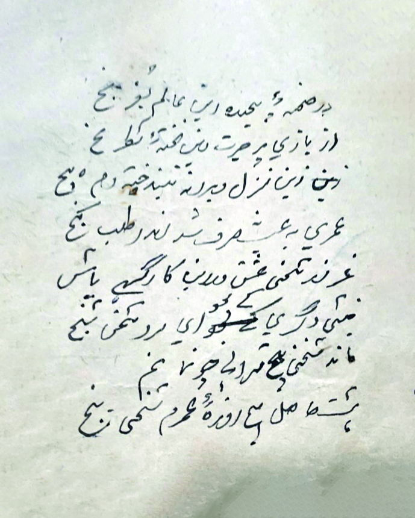
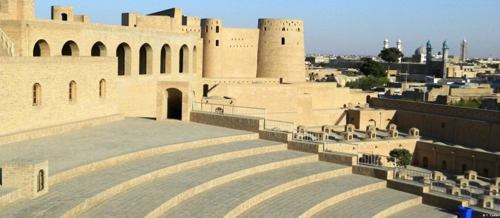

زندگینامه

از تاریخ دقیق تولد شادروان استاد محمد امین ترابی سند مؤثقی در دست نیست اما به قول مرحوم به اساس یادداشتهای پدر مرحوم ایشان، استاد محمد اکبر خیاط، محمد امین ترابی هروی در سال ۱۲۸۱ هجری در محله مشهور پای حصار، جوار جنوبی (ارگ) قلعه اختیارالدین شهر باستانی هرات متولد شد و در سن دوازده سالگی از داشتن پدر محروم گردید.
در سن طفولیت شامل مکتب (رشتیه) در زمان حکومت غازی امان الله خان محصل استقلال افغانستان و مشغول تحصیل شد که از جمله شاگردان اولیه مکتب مذکور بودند.
ایشان از همان دوره ابتدائیه مکتب تمایل مزیدی در ادبیات دری از خویش بروز داده و به سرودن شعر علاقه فراوان داشتند. بعد از دوره درخشان حکومت اعلیحضرت امان الله خان و مسدود گردیدن مکاتب تعلیمی توسط نادرخان، شادروان ترابی در سن جوانی فریادش را با اشعار اعتراضآمیز در زمینههای رشوه در داخل امور انتظامی، دستگاههای دولتی، فقر، عقبماندگی، ظلم، بیکاری و بیعدالتی به گوش مردم وطنش میرساند که این موضوع به مزاق دولتمردان زمان خوش نیامد.
مرحوم ترابی در سن نوزده سالکی با پنج نفر از دوستان نزدیک و روشنفکر خویش به دستور محمد هاشم خان صدراعظم وقت که ذریعه نامه رسمی که برای عبداللهرحیم خان نایب سالار (والی وقت هرات) ارسال شد، توسط محمد عظیم قوماندان امنیه وقت هرات در سال ۱۳۰۰ هجری توقیف و بعد از شکنجههای زیاد و اتهامات بیمورد و دور از منطق انسانی این جوانان دوره لیسه امانیه را که در آن زمان بیسوادی دامنگیر اکثر هموطنان ما بود جوانانی تحصیلکرده بودند هر شش نفر را به دستور هاشم خان نخست وزیر اسبق افغانستان با یک زنجیر و ذولانههای جداگانه با محافظت کامل به عنوان زندانی سیاسی به طرف کابل سوق دادند.
علت اصلی جبن و ترس حکومت دیکتاتوری هاشم خان از این اشخاص با سواد و روشنفکر و مخصوصاً متعلمین مکتب رشتیه (لیسه امانیه) در زمان حکومت اعلیحضرت امان الله خان غازی بود. این جوانان در کابل بدون هر نوع محاکمه علنی و یا غیر علنی به امر محمد هاشم خان صدر اعظم مستبد وقت افغانستان به اتهام بروز افکار سیاسی با زنجیر و ذولانه آنان را به حبس دوام (حبس ابد) محکوم و در زندان مخوف دهمزنگ فرستاده شدند.
زندهیاد محمد امین ترابی یک ماه کامل با زولانه بدون هر نوع استنطاقی در سلول انفرادی در برویش قفل بود. شادروان ترابی با دوستان آزادمنش و روشنفکر خویش، مرحوم سرور خان بدخشی، مرحوم غلان حسن واثق (شاعر)، مرحوم شیرمحمد (وفات در زندان)، مرحوم عباس علی (وفات در زندان) و مرحوم غلام رسول با حفظ متداوم مکتب مبارزه وی خویش تمام دوره محبوسیت خود را دایمالوقت با ذولانه و دستبند بسر بردند و صدها آرزوی پاک خدمت به وطن و ملت افغان و پیشرفت و تعالی افغانستان در مفکوره این جوانان روشنفکر باقی ماند.
مطالعه یادداشتهای کوتاه در روی پرذه کاغذهای کوچک که آرزوهای خدمت به وطن و ملت این جوانان وطنپرست را توجیه مینمود در بین اوراق پاره پاره ترابی قلب هر شخص با احساس و وطن دوست را جریحهدار میکند. زندهیاد استاد محمد امین ترابی برای تنویر افکار عامه با اشد قیودات زندان در طول دوازده سال حبس سیاسی آثار نظم و نثر زیادی از خویش بجای گذاشتند.
 معمولاً آثارشان را در روی تکه پارههای کاغذ مخفیانه مینوشتند و مکرراً از جانب سرپرست سلطنت و صدر اعظم مستبد محمد هاشم خان کاکای محمد ظاهرشاه که در آن وقت خیلی جوان بود به مرگ تهدید شدند. شادروان ترابی شخصی وطنپرست بودند و به قوم و ملتش عشق میورزیدند. پیروی از قوانین الهی، حاکمیت قانون اساسی، پیشرفت و تعالی مملکت، امحای بیسوادی، ظلم و فساد اداری از آمال وی و احیا و ایجاد وحدت ملی یکی از تاکیدات و آرزوهای مهم ایشان بود. مرحوم استاد ترابی تمام مردم افغانستان را قوم افغان میخواندند و در اکثریت آثار خویش خواستار وحدت ملی تمام اقوام بودند و راز تمدن و تعالی مملکت را در ایجاد کامل یک ملت واحد، آزاد و متحد میدانستند و در زندگی خویش به سلحشوری و آزادی ملت افغان افتخار میکردند و چندین غزل، قصیده و دوبیتی در تجلیل جشنهای استقلال افغانستان سرودهاند.
آثار نظم مرحوم استاد که کلاً جنبه سیاسی نداشت گاهگاهی در روزنامههای دولتی مخصوصاً روزنامه دولتی شهر هرات باستان (اتفاق اسلام) به نشر میرسید اما مضامین نظم و مخصوصاً مضامین نثر شادروان که تماماً جنبههای اعتراضی و سیاسی داشت هیچوقت در هیچ روزنامه و یا مجلهای به علت قیودات وزارت اطلاعات و فرهنگ چاپ نشد و نشر آن ممنوع بود. این آثار گرانبها معمولاً در داخل یک صندوق بسیار قدیمی که در یک قسمت آن به خط خوش نوشته بود (خاکدان ترابی) در روی اوراق پاره پاره و فرسودهای که در ایام محبوسیت سیاسی ایشان تحریر شده بود نگهداری میگردید.
تنها دوستان و اشخاص محدودی بعد از مطالعه آثار نثر و نظم وی دست به دست میگشتاندند و دوباره به استاد برنمیگشتند. به همین دلیل از آثار نثر ایشان متأسفانه هیچ در دست نیست و تعداد قابل ملاحظهای از اشعار سیاسی اجتماعی وی را نیز پیدا کرده نتوا نستیم.
از آثار مهم نثر شادروان ترابی که زمانی طولانی مورد بحث و مطالعه اشخاص با درد بود "دزدان روز"، "دزدان دل"، "ارباب ده" (کتاب)، "شهر اموات" و بالاخره مضمونی با عنوان (جنگ در طویله) که موقف و طرزالعمل تعدادی از نمایندگان بیسواد مردم را در پارلمان افغانستان (در دوره دوازدهم حادثه زد و خورد وکلا در سال ۱۳۴۴ هجری) در آن زمان توجیه میکرد، نام برد. وقتی دوستانشان، شعرا، ادبا و اشخاص با احساس به دیدن ایشان میآمدند تقاضا مینمودند تا آثارش را برای ایشان بخوانند و اینجانب در طفولیت به آنها گوش میدادم و اکنون میدانم که چه آثار گرانبهایی که محتوایش همه دردها، بیکاریها، فقر، محرومیتها و رنجهای مردم و بیپرواییها، ظلم و استبداد ارگانهای دولتی و خودسر بود در دسترس ما نیست. شادروان استاد ترابی و سه نفر از دوستانش که از آن زندان مخوف و تعدیهای دولت هاشم خان جان سالم به در بردند بعد از ده سال و اندی در اواخر سال ۱۳۱۰ هجری بعد از غور و تعمق در دوسیه این زندانیان سیاسی توسط آصف ثانی بیگناه ثابت شده و از زندان آزاد ولی مدت دوازده سال دیگر در کابل به دستور دولت در تبعید باقی ماندند و مرحوم ترابی بعد از بیست و دو سال اجازه یافتند که به زادگاه خویش برگردند. زندهیاد ترابی در سالهای تبعید در کارخانه حجاری و نجاری کابل به درخواست مرحوم دوست محمد خان ایماق صاحب فابریکه مذکور شامل کار و تجربیات قابل ملاحظهای در قسمت اداری، محاسبه و کنترول کسب نمودند و بعد از وفات مرحوم دوست محمد خان ایماق عازم هرات شده و هیچوقت به هیچ عنوانی به اساس سابقه سیاسی ایشان در هیچ یک از دفاتر دولتی به وظیفه گماشته نشدند و دایم در مؤسسات شخصی کار و با حقوق کمی که اخذ مینمودند زندگی میکردند.
هرگاه در یکی از ادارات دولتی تصادفاً به عنوان کارمند قراردادی استخدام میگردیدند، حین مطلع شدن صاحبان قدرت و مزدوران دولتی به اساس سابقه سیاسی ایشان به عنوان اضافه بست از وظیفه فوراً منفک میگردیدند. از زندهیاد ترابی غزلیات، قصاید و دوبیتیهای زیادی باقی مانده که قرار وصیت خود شادروان در پنج بخش بنام (سخن پنج) در طول سالهای متمادی بالاخره ترتیب و تنظیم شد.
شادروان محمد امین ترابی به زبان پشتو تسلط کامل داشت و تفسیر کتاب پاک خدا را کاملاً میدانستند. استاد شخص نهایت معتقد و پاکنفسی بود که انعکاس اعتقادیش در تمام سرودههای ایشان نمایان است و اشعارشان در اواخر عمر جنبه تصوفی پیدا نموده بود.
مرحوم پدرم زندگی درویشانه داشتند و هیچگاه دست و نفس به حق و مال دیگران نیالودند و با همه شکنجهها و مشکلات دوره زندان به مفکوره آزادمنشی خویش ادامه داده و بر علیه رشوه، ظلم، فقر و عقبماندگی افغانستان به مبارزه مستحکم و استوار ادامه دادند. و از ۶۸ سال عمر گرانبهایشان ۲۲ سال آن جبراً در زندان و تبعید از زادگاهشان گذشت. بالاخره به اساس حقگوییها و مبارزات مطبوعاتی و آثار سیاسی ایشان در شامگاه ۱۳ برج میزان سال ۱۳۴۹ هجری در سن ۶۸ سالگی بعد از کار روزانه در حالی که با چند قرص نان به جانب منزلشان روان بودند در اثر یک حادثه ترافیکی مرموزی در ولایت هرات به شهادت رسیدند.
زندهیاد ترابی پنج فرزند داشتند ۳ دختر و ۲ پسر که پسر جوانترشان توسط مزدوران روس و اعضای حزب خلق از دانشگاه ادبیات کابل نخست ربوده و مثل دیگر هموطنان گمشدهای ما زندهبگور گردید. بقیه هم در زمان اشغال افغانستان توسط قوای شوروی در گوشه و کنار دنیا مهاجر گردیدند.
1. این یک برهان دیگر سالها در اختفا ماندن آثار ترابی فقید است